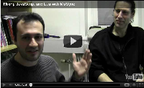

MobileLua is a port of Lua to MoSync. There are two ways to author MobleLua apps:
|  | In our screencast The JavaScript Lua Bridge Explained, Iraklis and Micki take a look at the basic architecture of JavaScript/Lua apps and show how easy it is to create them. There is also a dedicated site for MobileLua on GitHub. It provides all the information you need to get working with Lua in MoSync or LuaLive. |